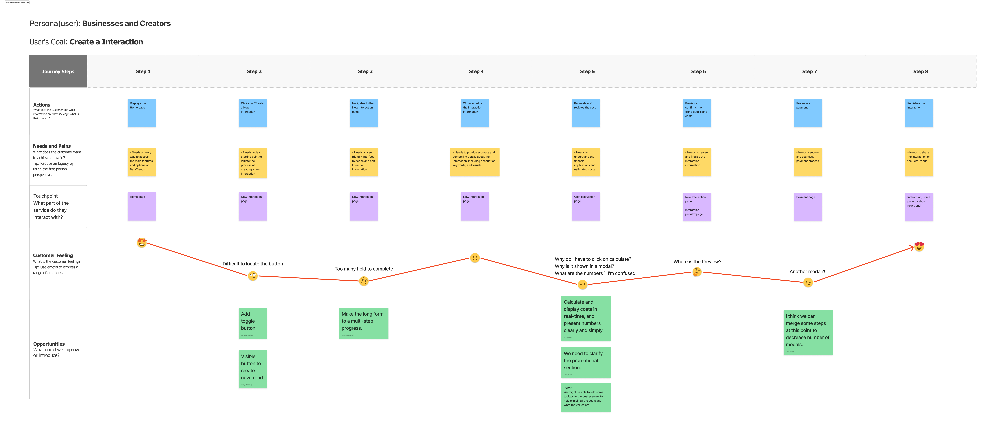
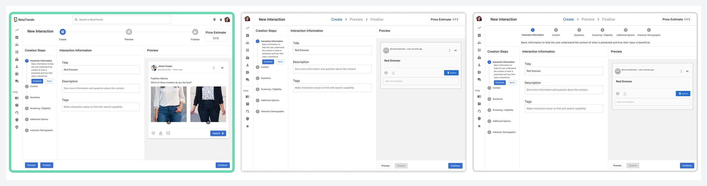
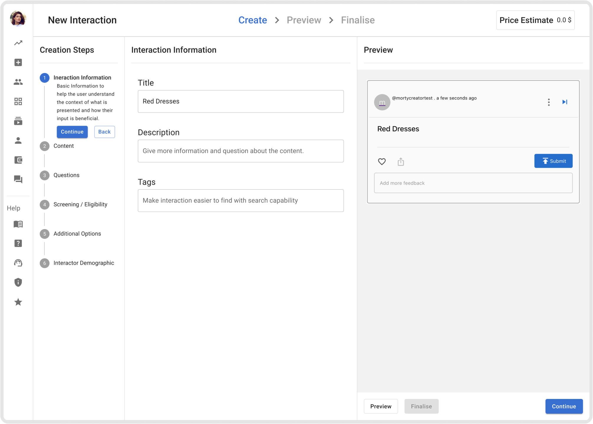

Case-study reading template
A reading layout for future case studies, with section navigation and optional supporting material in the margins.
The examples below use excerpts and images from the existing BetaTrends case study. They demonstrate presentation patterns; the current project pages remain unchanged.
- Example project
- BetaTrends New Interaction
- Role
- Product Designer
- Period
- 2023–2024
- Collaborator
- Pieter, founder and product owner
The problem was bigger than one screen
Creators had to find where to start, complete a long form, request a cost calculation, find the preview, move through modals, pay, and publish. An eight-step journey map showed three connected problems: weak orientation, delayed feedback, and preview separated from creation.

I created three options so we could compare the ideas
I ran workshops and created three options. Pieter and I compared step placement, preview space, price information, and question types, then chose the direction that kept steps, editing, and preview visible together.

The selected workspace

Hotjar helped me find where people were getting stuck
Before the first limited launch, I recommended a user-insight tool. We chose Hotjar, and I reviewed recordings for the /newTrend page. Managing questions took time, question types were unclear, and price and incomplete-step feedback appeared too late.
Reading and supporting details
Creators needed feedback while working
Creators needed progress, feedback, and preview while working.
A callout highlights a supported point. Keep essential explanation in the reading flow. Optional notes stay beside their related fragment on wide screens and become expandable rows below 1440px. Longer illustrated stories appear together at the end of their section on smaller screens.
The template uses the website’s current dark colours. It inherits the shared semantic roles so future global theme changes can reach the article and side areas together.
The section navigator appears when the main story begins. It shows the current section beside quiet markers. Hover over it or use the keyboard to reveal all section names. On smaller screens, a slim row attached to the header shows your location and opens the full list.
Device mockups
Use a device frame when it helps explain where an interface is used. Images and videos keep their original proportions; the frame adds no controls or content over the screen.
Phone
Desktop screen
Results and evidence
Use this result block for measured changes or reported outcomes. The headline is optional; each value stays paired with its label.
Creation-time usability evaluation
47% less time to create an Interaction
- Before the redesign
- 21 min 52 sec
- After the redesign
- 11 min 38 sec